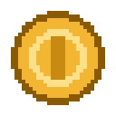

Toplanabilir yıldız
Boş bir nesneyi bileşenlerle toplanabilir bir eşyaya dönüştürmek ve prefab olarak çoğaltmak.
- GameObject, Component ve Prefab kavramlarını ayırt eder.
- Bir nesneyi prefab'a çevirip yeniden kullanır.
- Override davranışını açıklar.
Hazırlık
Başlamadan önce:
- 3. hafta ders notu
- 2. haftadaki çalışma projesi



_Proje/Scripts, görselleri _Proje/Sprites klasörüne koyun.Eşyayı bileşenlerle kurun
Hazır menüleri kullanmadan, boş bir nesneden başlayın: her bileşen nesneye bir yetenek ekliyor.
- İçe aktarın
yildiz.png'yi seçin:Pixels Per Unit32Filter ModePoint (no filter)CompressionNoneApply.
- Boş nesne
GameObject›Create Empty, adı
Yildiz. Yalnızca Transform var; nesne görünmüyor. - Görünür yapın
Add Component → Sprite Renderer; Sprite alanına
yildiz. - Temas sınırı
Add Component → Circle Collider 2D, Is Trigger işaretli.
Kontrol: Yıldızın çevresinde yeşil bir daire var. - Döndürün
Donme.cs'yi ekleyin; Eksen (0, 0, 1). ▶ ile deneyin.Kontrol: Yıldız dönüyor.
using UnityEngine; // Nesneyi belirtilen eksen çevresinde döndürür. // 2B'de eksen (0, 0, 1), 3B'de genellikle (0, 1, 0) seçilir. public class Donme : MonoBehaviour { [SerializeField] private float derecePerSaniye = 90f; [SerializeField] private Vector3 eksen = new Vector3(0f, 0f, 1f); void Update() { transform.Rotate(eksen * derecePerSaniye * Time.deltaTime); } }
- Boş nesne
GameObject›Create Empty, adı
Para. - Şekil ve çizim
Add Component → Mesh Filter, Mesh:
Cylinder. Sonra Mesh Renderer. İkisi eklenene kadar görünmediğine dikkat edin.Scale1 × 0,08 × 1Rotation X90 - Materyal
_Proje/Materialsiçinde yeni materyal, adıAltin:Base Map rengisarıMetallic1Smoothness0,7Kontrol: Para parlak ve metalik. - Temas sınırı
Add Component → Capsule Collider, Is Trigger işaretli.
- Döndürün
Donme.cs'yi ekleyin; Eksen (0, 1, 0). ▶ ile deneyin.Kontrol: Para dik ekseni çevresinde dönüyor.
using UnityEngine; // Nesneyi belirtilen eksen çevresinde döndürür. // 2B'de eksen (0, 0, 1), 3B'de genellikle (0, 1, 0) seçilir. public class Donme : MonoBehaviour { [SerializeField] private float derecePerSaniye = 90f; [SerializeField] private Vector3 eksen = new Vector3(0f, 0f, 1f); void Update() { transform.Rotate(eksen * derecePerSaniye * Time.deltaTime); } }
Prefab'a çevirin ve çoğaltın
- Prefab
Nesneyi Hierarchy'den
_Proje/Prefabs'a sürükleyin.Kontrol: Hierarchy'de adı maviye döndü. - Beş kopya
Prefab'ı sahneye dört kez daha sürükleyip dağıtın.
- Kalıbı değiştirin
Prefab'a çift tıklayın, Derece Per Saniye'yi 360 yapın, sol üstteki ‹ ile sahneye dönün.
Kontrol: Beş kopyanın hepsi hızlandı.
Override ve otomatik üretim
- Override
Tek bir kopyanın hızını 30 yapın (alan kalın yazıya döner). Sonra kalıbın hızını yine değiştirin.
Kontrol: Dört kopya değişti, override'lı kopya değişmedi. - Geri alın
O kopyada Inspector üstü›Overrides›Revert All.
- Otomatik üretim
Boş bir nesne (
Uretici) oluşturun,Uretici.cs'yi ekleyin, Kalip'e Project'teki prefab'ı sürükleyin. ▶Kontrol: İki saniyede bir yeni kopya, en fazla on tane.
using UnityEngine; // Belirli aralıklarla bir prefab'dan yeni kopya üretir. public class Uretici : MonoBehaviour { [SerializeField] private GameObject kalip; // Inspector'dan prefab atanır [SerializeField] private float aralik = 2f; // saniye [SerializeField] private int enFazla = 10; [SerializeField] private float yayilma = 3f; // üretim noktası çevresinde yatay rastgele sapma private int uretilen; void Start() { InvokeRepeating(nameof(Uret), 0f, aralik); } void Uret() { if (uretilen >= enFazla) { CancelInvoke(nameof(Uret)); return; } Vector3 konum = transform.position + new Vector3(Random.Range(-yayilma, yayilma), 0f, 0f); Instantiate(kalip, konum, Quaternion.identity); uretilen++; } }
Düşünün
Teslim ve kontrol listesi
- Beş kopyalı sahnenin Hierarchy ekran görüntüsü
- Override sorularının yanıtları
Teslim etmeden önce listeyi işaretleyin:
- Eşya boş bir nesneden bileşen eklenerek kuruldu.
- Eşya prefab; sahnede en az beş kopyası var.
- Kalıp değişikliğinin kopyalara yayıldığını ve override'ın bunu nasıl engellediğini gösterebiliyorum.
- Uretici script'i prefab'dan kopya üretiyor.
Takıldığınızda
“The script class cannot be found”
Donme.cs içinde public class Donme. Console'da kırmızı hata varsa önce onu çözün.Yıldız bulanık
Kopya üretilmiyor
Sonraki adım
Final projenize taşıyın
Final projenizde tekrar eden nesneleri (soru kartı, engel, toplanabilir) listeleyip tasarım belgesine not edin. Her biri bir prefab olacak.
İleri görev
Uretici.cs'ye, üretilen her kopyanın rengini Random.ColorHSV() ile rastgele yapan bir satır ekleyin (2B: SpriteRenderer.color, 3B: Renderer.material.color).